Intro to Pen
Meet the Pen — your drawing tool. A pen starts at the origin (0, 0), faces right, and draws a line every time it moves forward.
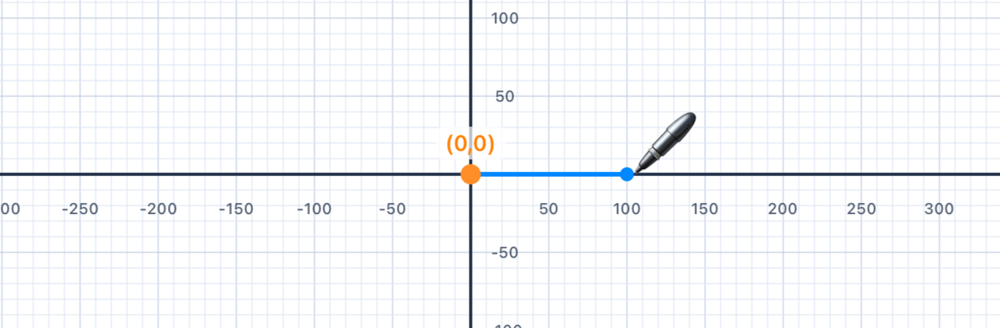
The Pen API
In this playground, you draw shapes using a Pen object. Picture yourself walking across a big sheet of paper while holding a pen to the ground — the pen has a position (where you are) and a direction (which way you're facing), and it draws a line every time you step forward.
💡 Coding tip. APenis a Swift object. We make one withvar p = Pen()and then call methods on it using dot notation, likep.addLine(...). Thevarkeyword says "this variable may change" — and indeed every time you add a line, the pen's position and heading change.
Creating a Pen
var p = Pen() // Create a new pen at (0, 0), facing right p.addLine(distance: 100) // Move forward 100 units, drawing as you go addShape(pen: p) // Render the shape on screen
Key Commands
p.addLine(distance: 100) // Draw a line 100 units forward p.turn(degrees: 90) // Turn LEFT 90° p.move(distance: 50) // Move 50 units without drawing p.penColor = .red // Change line colour p.lineWidth = 3 // Change line thickness
Coordinate System
The canvas uses a standard Cartesian coordinate system — x increases to the right, y increases upward. The pen starts at the origin (0, 0) and faces right (along the positive x-axis). turn(degrees: 90) rotates the pen anti-clockwise (a left turn).
📐 Maths tip. In maths class, angles are always measured anti-clockwise from the positive x-axis, and that's exactly what turn does. Positive angles go left; negative angles go right. This feels backwards at first because most people think "positive = clockwise", but the whole of mathematics disagrees with them — including your trig class and the unit circle.
💡 Coding tip. Nothing appears on screen until you calladdShape(pen: p). Think ofaddLineandturnas giving the pen instructions — it remembers them, but it only draws when you ask it to show its work.
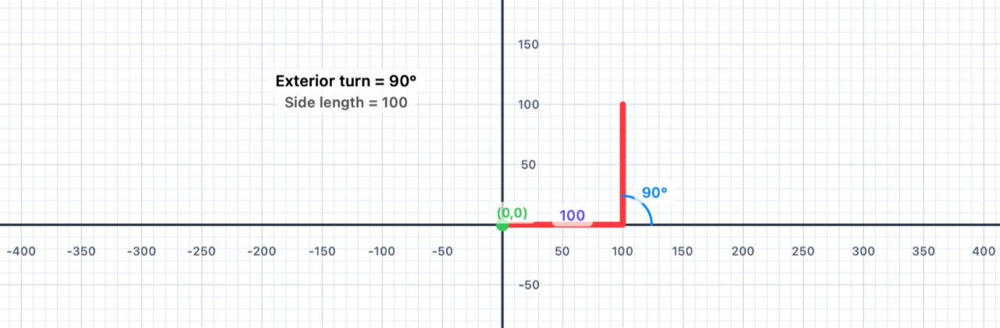
💡 Think About It
- What direction does the pen face at the start?
- What happens if you call
addLinetwice without turning? - What coordinates does the pen reach after
addLine(distance: 100)?
| IM1 Concept | Connection |
|---|---|
| Coordinate geometry | The pen uses an (x, y) coordinate system — moving right increases x; the starting position is the origin (0, 0) |
| Directed distance | addLine(distance:) moves the pen a directed amount — length and direction both matter |
| Geometric definitions | A line segment has two endpoints; every call to addLine creates a segment between the current and new pen positions |
Turning Corners
Explore turn(degrees:) — and discover how exterior angles and interior angles relate in any polygon.
Angles and Turning
The turn command rotates the pen in place without moving it. Positive degrees turn left (anti-clockwise); negative degrees turn right (clockwise).
🚶 Walk it out. Imagine walking along a line and then reaching a corner. You stop, swivel on the spot, and start walking again. That swivel is what turn does — it changes where you're facing but not where you are. The amount you swivel is measured in degrees.
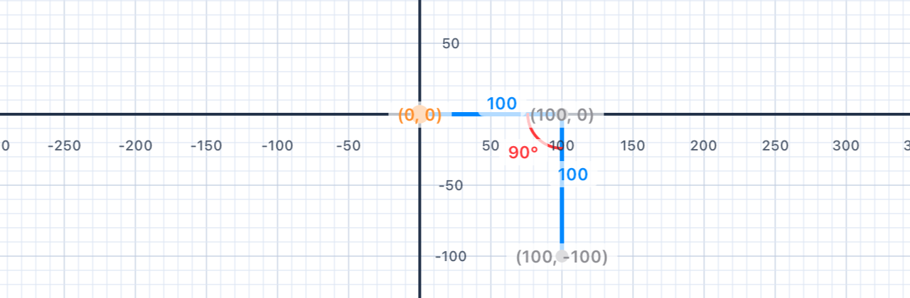
Interior vs. Exterior Angles
When the pen draws a polygon, the angle you pass to turn is the exterior angle — the supplement of the interior angle.
- Interior angle: the angle inside the polygon at each vertex
- Exterior angle: the supplement — how much you turn to keep walking along the boundary
- For any convex polygon: interior + exterior = 180°
Angle Classification
- Acute — less than 90°
- Right — exactly 90°
- Obtuse — between 90° and 180°
- Straight — exactly 180°
- Reflex — greater than 180°
The Sum of Exterior Angles
For any convex polygon, the exterior angles add up to exactly 360° — one full rotation. This is why, after drawing a closed shape, the pen always faces its original direction.
🚶 Walk it out. If you walked all the way around the boundary of a closed polygon and came back to your starting point facing the same way, you must have turned a total of 360° — one full revolution. This is true for a triangle, a square, a pentagon, a wobbly irregular hexagon, or even an 11-sided monster. The number of corners doesn't matter — only the total turning does.
📐 Maths tip. The interior angle of a polygon lives inside the shape at a corner. The exterior angle is its supplement (interior + exterior = 180°). The code tells the pen how much to turn, which is the exterior angle — not the interior one. This trips up almost everybody the first time.
// A right turn (clockwise): use a negative angle var p = Pen() p.addLine(distance: 100) p.turn(degrees: -90) // Turn RIGHT 90° p.addLine(distance: 100) addShape(pen: p)
| IM1 Concept | Connection |
|---|---|
| Angle classification | Turns of 90°, 120°, 144° etc. correspond to right, obtuse, and obtuse exterior angles |
| Supplementary angles | Interior angle + exterior angle = 180° — they are supplementary |
| Sum of exterior angles | The pen always rotates a total of 360° to return to its starting direction |
Squares
Draw a square with side length 100. A square has 4 equal sides and 4 right angles — so each turn is 90°.
Your Task
Draw a square with side length 100 using the Pen API. Remember: a square has 4 sides and turns of 90° at each corner.
var p = Pen() // Your code here — 4 lines, 4 turns addShape(pen: p)
Mathematical Concepts
Properties of a Square
- 4 equal sides
- 4 right angles (90° each)
- Perimeter = 4 × side length
- Area = side² = 100² = 10,000 square units
- Sum of exterior angles = 4 × 90° = 360° ✓
Quadrilateral Definition
A square is a special rectangle (all angles 90°), which is a special parallelogram (opposite sides parallel), which is a special quadrilateral (4-sided polygon).
📐 Maths tip. The interior angle of a square is 90°, so its exterior angle is 180° − 90° = 90°. It's one of the very few polygons where the interior and exterior angles happen to be equal. Don't let that coincidence fool you — in every other polygon, they're different.
💡 Coding tip. Notice that you're writing the same two lines over and over:addLinethenturn. Programmers hate repetition — it's error-prone and boring to type. In Chapter 3 you'll meet theforloop, which lets you write "do this four times" in one line. For now, practice the long way — it builds your intuition for what the loop will eventually replace.
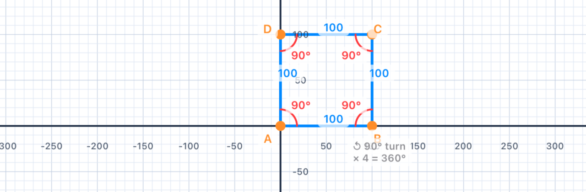
var p = Pen() p.addLine(distance: 100) p.turn(degrees: 90) p.addLine(distance: 100) p.turn(degrees: 90) p.addLine(distance: 100) p.turn(degrees: 90) p.addLine(distance: 100) addShape(pen: p) // 4 × 90° = 360° — the pen faces its original direction again
| IM1 Concept | Connection |
|---|---|
| Quadrilateral properties | A square is a regular quadrilateral — all sides equal, all angles 90° |
| Perimeter & area | P = 4s = 400; A = s² = 10,000 sq units |
| Sum of exterior angles | 4 × 90° = 360° — the pen makes one complete rotation |
Rectangles
Draw a rectangle that is 100 units wide and 200 units tall. Rectangles have two pairs of equal sides — so the distances alternate between the width and height.
Your Task
Draw a 100 × 200 rectangle. The pen still turns 90° at each corner, but now the side lengths alternate.
var p = Pen() // 4 sides, alternating 100 and 200 addShape(pen: p)
Mathematical Concepts
Rectangle Properties
- 2 pairs of equal parallel sides
- 4 right angles (90° each)
- Perimeter = 2(width + height) = 2(100 + 200) = 600 units
- Area = width × height = 100 × 200 = 20,000 square units
📐 Maths tip. Why do opposite sides of a rectangle come out parallel when you draw it? Because you turn by the same angle (90°) at every corner — after two turns, you've swung around 180°, so side 3 points in exactly the opposite direction of side 1. Equal turns produce parallel sides. This is a tiny result you'll meet again as the Alternate Interior Angles theorem.
💡 Coding tip. The two different side lengths (100 and 200) appear several times in the code. If you wanted to change the rectangle's size, you'd have to update each number individually — and it's easy to miss one. In Chapter 2 you'll learn to store numbers in variables like let width = 100, so one edit changes the whole shape.
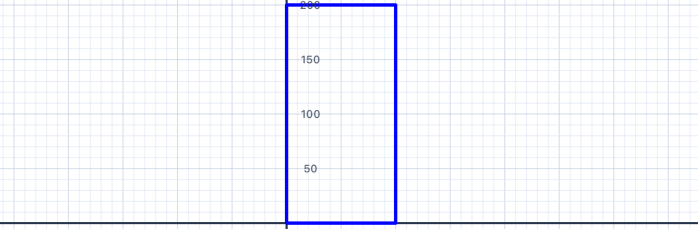
var p = Pen() p.addLine(distance: 100) // bottom p.turn(degrees: 90) p.addLine(distance: 200) // right side p.turn(degrees: 90) p.addLine(distance: 100) // top p.turn(degrees: 90) p.addLine(distance: 200) // left side addShape(pen: p)
| IM1 Concept | Connection |
|---|---|
| Rectangle properties | Opposite sides are equal and parallel; all angles are 90° |
| Perimeter formula | P = 2(w + h) = 2(100 + 200) = 600 |
| Area formula | A = w × h = 20,000 sq units |
More Squares
Draw three nested squares with side lengths 50, 100, and 150. They all share the same starting point — creating a nested, concentric pattern.
Your Task
Draw three squares: side lengths 50, 100, and 150. Each starts from the same origin point. Use a single Pen and draw them one after the other.
var pen = Pen() // Square 1: side 50 // Square 2: side 100 // Square 3: side 150 addShape(pen: pen)
Mathematical Concepts
Similar Figures
The three squares are similar figures — they have the same shape but different sizes. In similar figures:
- Corresponding angles are equal
- Corresponding side lengths are in the same ratio
- The scale factor from the 50-unit to the 100-unit square is 2; from 50 to 150 is 3
Any two squares are always similar — all squares have 90° angles and all sides are equal.
📐 Maths tip. When the side length of a square doubles, the perimeter doubles (×2), but the area quadruples (×4 = 2²). When it triples, the area grows ×9 = 3². This is the rule that scale factor k in a linear dimension produces scale factor k² in area. You'll see this again in Chapter 5 when we scale shapes on purpose.
💡 Coding tip. Notice we're reusing a single pen variable calledpenfor all three squares. After each square, the pen returns to(0, 0)facing right (four 90° turns = 360°), so the next square starts exactly where the last one did — that's what creates the nested look.
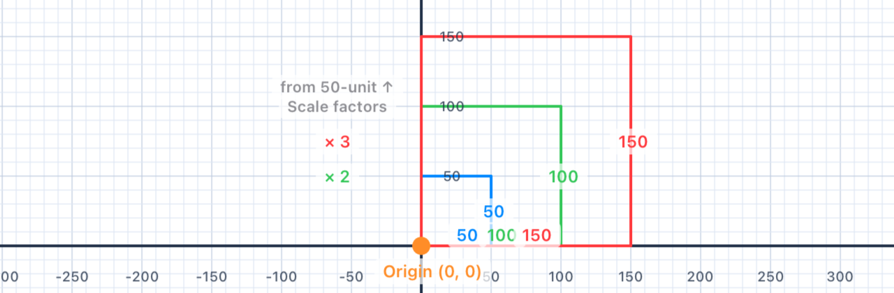
var pen = Pen() // Square 1: side 50 pen.addLine(distance: 50) pen.turn(degrees: 90) pen.addLine(distance: 50) pen.turn(degrees: 90) pen.addLine(distance: 50) pen.turn(degrees: 90) pen.addLine(distance: 50) pen.turn(degrees: 90) // Square 2: side 100 pen.addLine(distance: 100) pen.turn(degrees: 90) pen.addLine(distance: 100) pen.turn(degrees: 90) pen.addLine(distance: 100) pen.turn(degrees: 90) pen.addLine(distance: 100) pen.turn(degrees: 90) // Square 3: side 150 pen.addLine(distance: 150) pen.turn(degrees: 90) pen.addLine(distance: 150) pen.turn(degrees: 90) pen.addLine(distance: 150) pen.turn(degrees: 90) pen.addLine(distance: 150) pen.turn(degrees: 90) addShape(pen: pen)
| IM1 Concept | Connection |
|---|---|
| Similar figures | All three squares are similar — same angles, proportional sides |
| Scale factor | 50→100 scale factor = 2; 50→150 = 3 |
| Geometric patterns | Nesting similar figures at a common vertex reveals proportional growth |
Triangle in Square
Draw an equilateral triangle (side 100) and a square (side 100) sharing the same base. Discover how the turn angles differ between polygons.
Your Task
Draw an equilateral triangle and a square, both with side length 100. You can share the first side, or draw them as separate shapes next to each other.
var triangle = Pen() // Equilateral triangle — 3 sides, 120° turns var square = Pen() // Square — 4 sides, 90° turns addShape(pen: triangle) addShape(pen: square)
Mathematical Concepts
Equilateral Triangle
- 3 equal sides, 3 equal angles
- Each interior angle = 60°
- Turn angle (exterior) = 180° − 60° = 120°
- 3 × 120° = 360° ✓
Angle Sum Theorem
For any triangle, the interior angles sum to 180°. For an equilateral triangle: 60° + 60° + 60° = 180°. For a square: 90° + 90° + 90° + 90° = 360°.
📐 Maths tip. General formula: Sum of interior angles = (n − 2) × 180°, where n is the number of sides. Triangle: 1 × 180° = 180°. Square: 2 × 180° = 360°. Pentagon: 3 × 180° = 540°. Each extra side adds another 180° because you can cut the new polygon into one more triangle.
🚶 Walk it out. At each corner of an equilateral triangle, you swivel through 120°. Three corners × 120° = 360° — the full turn you need to come back facing the way you started. On a square, four corners × 90° = 360°. Same total turn, just split into different sized swivels. This is the same "sum to 360°" rule from §02.
💡 Coding tip. Notice we use two separate pen variables —triangleandsquare— one for each shape. You can have as many pens on the canvas as you like, and each one keeps its own position, heading, and colour. You'll explore this much more in Chapter 2.
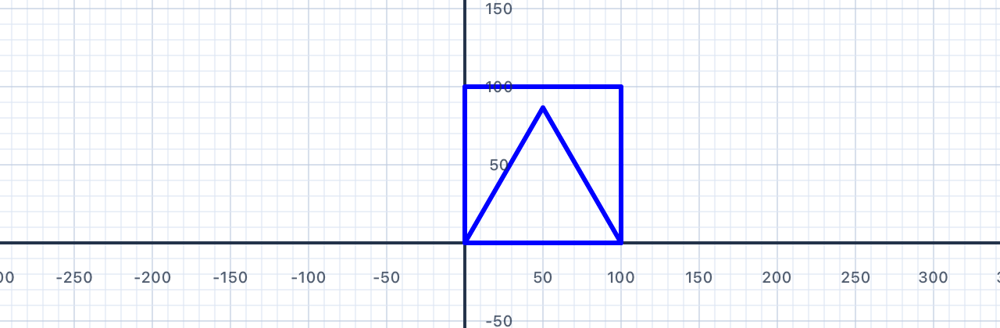
var triangle = Pen() triangle.addLine(distance: 100) triangle.turn(degrees: 120) triangle.addLine(distance: 100) triangle.turn(degrees: 120) triangle.addLine(distance: 100) var square = Pen() square.addLine(distance: 100) square.turn(degrees: 90) square.addLine(distance: 100) square.turn(degrees: 90) square.addLine(distance: 100) square.turn(degrees: 90) square.addLine(distance: 100) addShape(pen: triangle) addShape(pen: square)
| IM1 Concept | Connection |
|---|---|
| Triangle angle sum | All triangles: angles sum to 180°; equilateral = 3 × 60° |
| Interior angle formula | (n−2) × 180° / n: triangle → 60°; square → 90° |
| Polygon comparison | Different n-gons need different turn angles to close their paths |
Up and Down
Meet move(distance:) — just like addLine, but without drawing. Use it to reposition the pen and draw shapes in separate locations.
Moving Without Drawing
p.addLine(distance: 100) // Moves forward AND draws a line p.move(distance: 100) // Moves forward — no line drawn
The two commands behave identically in terms of changing the pen's position — the only difference is whether a line appears on screen.
💡 Coding tip. Think ofaddLineas "pen down and step forward"; think ofmoveas "pen up and step forward". Same step, different state. Every classical pen-graphics system has these same two commands — they're what let you separate where I go from what I draw.
Dashed Lines
Alternating addLine and move creates a dashed line:
var p = Pen() p.addLine(distance: 50) // dash p.move(distance: 20) // gap p.addLine(distance: 50) // dash p.move(distance: 20) // gap p.addLine(distance: 50) // dash addShape(pen: p)
Exercise: Two Stacked Squares
Try drawing two separate squares — one above the other — using a single pen. Use move to jump from the first square to the second without connecting them.
📐 Maths tip. Moving the pen without drawing is a translation — it slides the pen's position without rotating or resizing anything. The second square you draw is a translated copy of the first: every point is shifted by the same amount in the same direction. That's the formal definition of a translation, and you'll meet it again in Chapter 5.
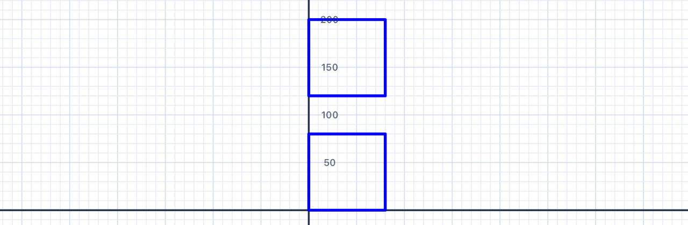
var p = Pen() // First square p.addLine(distance: 80) p.turn(degrees: 90) p.addLine(distance: 80) p.turn(degrees: 90) p.addLine(distance: 80) p.turn(degrees: 90) p.addLine(distance: 80) p.turn(degrees: 90) // Jump up to next position p.turn(degrees: 90) // Face upward p.move(distance: 120) // Move up 120 units p.turn(degrees: -90) // Face right again // Second square p.addLine(distance: 80) p.turn(degrees: 90) p.addLine(distance: 80) p.turn(degrees: 90) p.addLine(distance: 80) p.turn(degrees: 90) p.addLine(distance: 80) addShape(pen: p)
| IM1 Concept | Connection |
|---|---|
| Transformations — translations | move(distance:) is a translation — the pen slides without rotating |
| Congruence | Two squares drawn at different positions are congruent — identical in size, shape, and angles |
| Coordinate geometry | Moving up increases y; moving right increases x |
Multiple Shapes
Draw three shapes in a horizontal row: a square, a triangle, and another square — each with side length 100. Use move to leave a gap between them.
Your Task
Using one or more pens, draw a square (100), an equilateral triangle (100), and another square (100) in a row with small gaps between each shape.
var p = Pen() // Square 1, then move, then Triangle, then move, then Square 2 addShape(pen: p)
Mathematical Concepts
Composing Shapes
Placing shapes side-by-side is an example of geometric composition — building complex figures from simple ones. The second square is a translation of the first — same shape, moved horizontally.
📐 Maths tip. After drawing the triangle with three 120° turns, the pen's heading has changed by 360° — which means it ends up facing exactly where it started. That's not a coincidence — it's the "sum of exterior angles = 360°" rule from §02 doing its job. That's why the move after the triangle carries you horizontally without any extra turning.
💡 Coding tip. One pen can draw as many shapes as you like, one after another. Chapter 6 is entirely about composing small shapes — squares, triangles, circles — into bigger scenes like a house, a tree, or a whole suburban street.
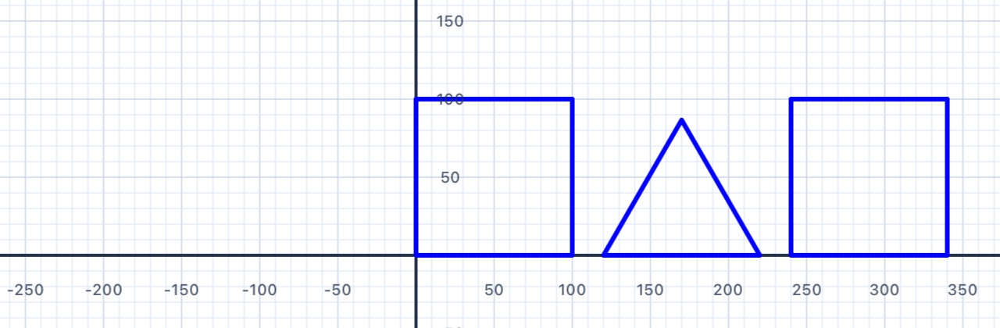
var p = Pen() // Square 1 p.addLine(distance: 100) p.turn(degrees: 90) p.addLine(distance: 100) p.turn(degrees: 90) p.addLine(distance: 100) p.turn(degrees: 90) p.addLine(distance: 100) p.turn(degrees: 90) // Gap to triangle p.move(distance: 120) // Triangle p.addLine(distance: 100) p.turn(degrees: 120) p.addLine(distance: 100) p.turn(degrees: 120) p.addLine(distance: 100) p.turn(degrees: 120) // Gap to square 2 (pen already faces right after 3 × 120° = 360°) p.move(distance: 120) // Square 2 p.addLine(distance: 100) p.turn(degrees: 90) p.addLine(distance: 100) p.turn(degrees: 90) p.addLine(distance: 100) p.turn(degrees: 90) p.addLine(distance: 100) addShape(pen: p)
| IM1 Concept | Connection |
|---|---|
| Transformations — translations | Moving between shapes is a translation; the second square is the first translated |
| Congruence | The two squares are congruent — identical shape, size, and angles |
| Geometric modeling | Composing multiple shapes into one figure is a fundamental geometric skill |
Five-Point Star
Draw a five-pointed star (pentagram) in a single continuous path. The secret lies in the turn angle: 144°.
Your Task
Draw a five-pointed star. All arms should be the same length (150 units). The pen draws the whole star in one continuous stroke without lifting.
var p = Pen() // 5 lines, 5 turns — what's the turn angle? addShape(pen: p)
Mathematical Concepts
The Turn Angle for a Pentagram
For a regular polygon, the exterior angle = 360° / n. But for a star polygon, the path winds around the centre more than once.
- A pentagram winds around the centre twice
- Total rotation = 2 × 360° = 720°
- Each of the 5 turns = 720° ÷ 5 = 144°
📐 Maths tip — why 720°? A regular polygon path winds once (360°). A star polygon {5/2} winds twice — the path overlaps itself, completing two full loops before coming back to its start. Total turn = 2 × 360° = 720°. Spread that across 5 corners and each turn is 144°.
🚶 Walk it out. Imagine walking along a pentagram. At each point you turn quite sharply — 144° is more than a right angle. Between the five points, you swivel through a total of 720°, which means you finish pointing the same way you started, just like on every other closed polygon. The difference is you spun around twice, not once.
Star Polygon Notation
Mathematicians write this as {5/2} — a 5-point star connecting every 2nd vertex. The general turn angle for {n/k} is 360k / n. For {5/2}: 360 × 2 / 5 = 144° ✓. You'll meet this formula again in Chapter 3 when you draw stars with a loop.
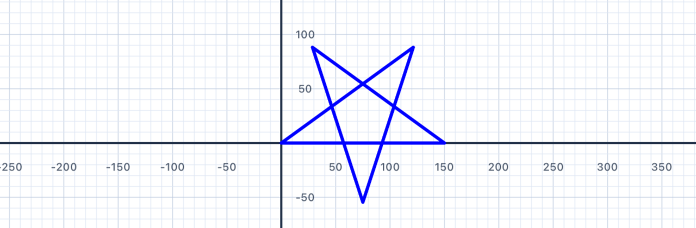
var p = Pen() p.addLine(distance: 150) p.turn(degrees: 144) p.addLine(distance: 150) p.turn(degrees: 144) p.addLine(distance: 150) p.turn(degrees: 144) p.addLine(distance: 150) p.turn(degrees: 144) p.addLine(distance: 150) p.turn(degrees: 144) addShape(pen: p) // 5 × 144° = 720° = 2 × 360° ✓
| IM1 Concept | Connection |
|---|---|
| Angle relationships | Each star point is an acute angle (36°); the turn angle (144°) is obtuse |
| Sum of exterior angles | 5 × 144° = 720° = 2 × 360° — the path winds twice around the centre |
| Star polygon {5/2} | A generalisation of the regular polygon concept — connecting every k-th vertex |
Star of David
Draw a Star of David (hexagram) using two overlapping equilateral triangles — one pointing up, one pointing down.
Your Task
Draw a Star of David using two equilateral triangles of side length 150. The triangles should overlap to form a six-pointed star.
var david = Pen() // Triangle 1 — upward triangle (3 sides, 120° turns) // Reposition to the start of triangle 2 without drawing. // Use david.move(distance:) and david.turn(degrees:) to // walk the pen to the top-right corner of triangle 2. // Triangle 2 — downward triangle (3 sides, 120° turns) addShape(pen: david)
Mathematical Concepts
The Hexagram
Unlike the five-pointed star (drawn in one continuous path), a hexagram is formed from two separate triangles. The downward triangle is a rotation of the upward triangle by 60° around the centre.
Rotational Symmetry
A shape has rotational symmetry if it can be rotated by less than 360° and look identical. The Star of David has order-6 rotational symmetry — it looks the same after rotations of 60°, 120°, 180°, 240°, or 300°.
- Square → order-4 symmetry (looks same after 90°, 180°, 270°)
- Equilateral triangle → order-3 symmetry (looks same after 120°, 240°)
- Star of David → order-6 symmetry
📐 Maths tip — where's the centre? For an equilateral triangle with side length s, the height is s√3/2, and the centroid (the balance point) sits ⅓ of the way up from the base — at height s√3/6. For s = 150, that's about 43.3 units up. To make the two triangles share a centre, the second (upside-down) triangle must have its base at height 2 × 43.3 ≈ 86.6, not 90.
🚶 Walk it out. After finishing triangle 1 you're back at (0, 0) facing right. To start triangle 2 at the top-right corner (150, 86.6), walk 150 to the right, swivel to face up, walk 86.6 up, then swivel to face left before drawing. Then trace another equilateral triangle — three 120° turns — and you're done.
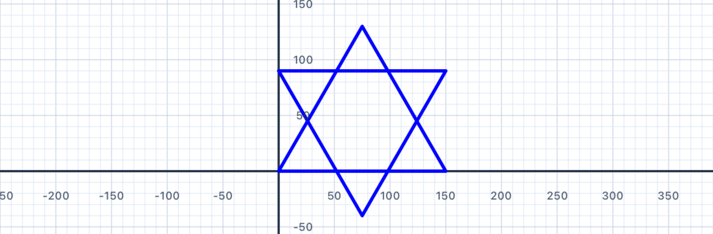
var david = Pen() // Triangle 1 david.addLine(distance: 150) david.turn(degrees: 120) david.addLine(distance: 150) david.turn(degrees: 120) david.addLine(distance: 150) david.turn(degrees: 120) // Reposition to the top-right corner of triangle 2. // The centroid of triangle 1 is at y ≈ 43.3, so the base // of the inverted triangle sits at y ≈ 2 × 43.3 = 86.6. david.move(distance: 150) david.turn(degrees: 90) david.move(distance: 86.6) david.turn(degrees: 90) // Triangle 2 david.addLine(distance: 150) david.turn(degrees: 120) david.addLine(distance: 150) david.turn(degrees: 120) david.addLine(distance: 150) david.turn(degrees: 120) addShape(pen: david)
💡 Think About It
- How does the Star of David differ from the five-pointed star?
- Can you see the regular hexagon hidden in the middle?
- What other shapes can be constructed by overlapping simpler shapes?
| IM1 Concept | Connection |
|---|---|
| Transformations — rotations | The downward triangle is a rotation of the upward triangle by 60° around the centre |
| Congruence | The two triangles are congruent — same size, same angles; one is a rigid transformation of the other |
| Rotational symmetry | The hexagram has order-6 rotational symmetry |
| Triangle properties | Both triangles are equilateral: 3 equal sides, 3 × 60° interior angles |
Coming Up in Chapter 2
You've now got the full set of core pen commands: addLine, turn, move, penColor, lineWidth, and addShape. You've drawn squares, rectangles, triangles, stars, and composite figures, and you've seen the "sum of exterior angles = 360°" rule in action.
In Chapter 2 — Fancy Shapes, you'll learn how to:
- Store numbers in variables with
letandvar, so you can change a shape's size by editing one line - Draw with multiple pens and coloured/filled shapes
- Build irregular polygons and discover the general angle rule
- Explore lines of symmetry and more advanced shapes like houses and crosses
You'll find yourself writing less code to draw bigger ideas — and that pattern continues in Chapter 3, where a for loop will replace the long repeating blocks you've been typing out by hand.